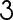

Plantilla:Efemérides - 3 de octubre
De:
La Frikipedia
, la enciclopedia
extremadamente
seria.

1714
- En
España
, el rey Felipe V aprueba la constitución de la
Real Academia Española
.
1932
-
Irak
se independiza del
Reino Unido
.
1965
- En
Cuba
,
Fidel Castro
lee oficialmente la carta de despedida del
Che Guevara
.
1974
- En
Estados Unidos
comienza el juicio al presidente
Richard Nixon
por el escándalo de “Watergate”.
1976
- Nace
Herman Li
, famoso por ser
guitarrista
de la banda de
Heavy Metal
DragonForce
y por ser el primer
chino
jebi
conocido por la
historia
del
Metal
.
1990
- La
República Democrática de Alemania
es absorvida por la República Federal Alemana, por lo que
Alemania
volvió a ser una nación unida, no por una fusión sino por una absorción
capitalista
.
1992
– La cantante
irlandesa
Sinéad O'Connor rompe una
foto
del
papa
Juan Pablo II
como repudio a sus
políticas
conservadoras
.
1996
– La República Federal de Yugoslavia (actual
Serbia
y
Montenegro
) establece relaciones diplomáticas con
Bosnia-Herzegovina
, según lo establecido en un acuerdo firmado en
París
.
1999
- Muere Akio Morita,
empresario
japonés
fundador de la
empresa
Sony
.
Autor(es):
Mad Max
Shadowmura
Frikipedia 2005-2016, Licencia
GFDL 1.2
- Extraído por FrikiLeaks
 De: La Frikipedia, la enciclopedia extremadamente seria.
De: La Frikipedia, la enciclopedia extremadamente seria.